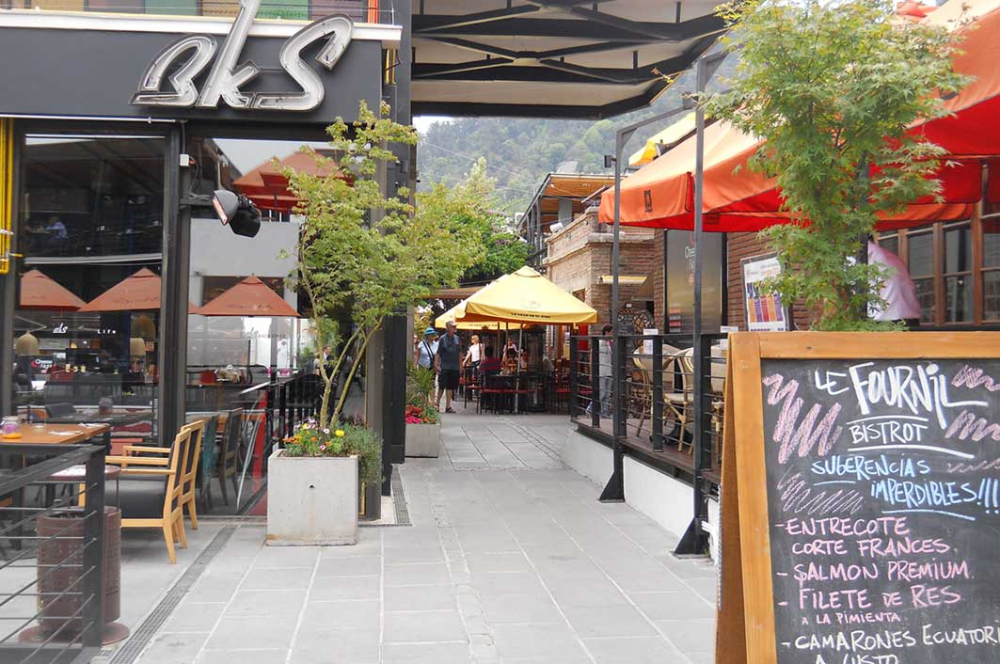
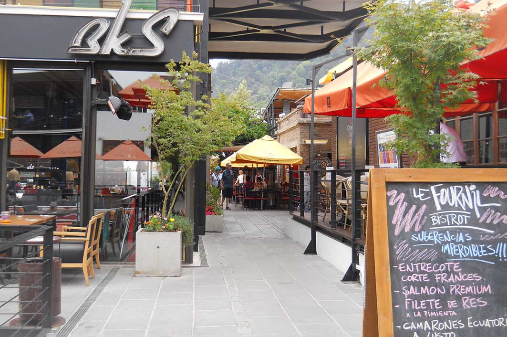

You are welcome
 

Santiago de Chile en invierno
Santiago de Chile vive las cuatro estaciones y la época de invierno transcurre entre los meses de Junio, julio y agosto, desarrollando bajas temperaturas que traen consigo mucho frío, nevadas y precipitaciones.
Por su ubicación al pie de las montañas de Los Andes, rodeado de picos que sobrepasan los 5 y 6 mil metros de altitud, a más de 500 metros sobre el nivel del mar, su clima suele ser del tipo que llaman mediterráneo-continental.
Además Santiago se ubica en una cuenca, donde la Cordillera de la costa funge como un «biombo climático» ante la afectación marina, promoviendo así la oscilación térmica de cada día y de cada año, así como a mantener una humedad relativa baja.
Pueden coexistir entonces dos climas en el área metropolitana de Santiago de Chile, que son la estación seca prolongada y el frío de altura en la Cordillera de Los Andes.
La estación seca suele hacer sentir un invierno bien marcado, con temperaturas extremas que bordean los cero grados, en oposición al verano cuyas máximas temperaturas pasan los 30°C durante el día. Las precipitaciones se concentran cerca de un 80% en los meses de invierno con un promedio anual de 369,5 mm de agua caída, pudiendo variar drásticamente la cantidad de lluvia, de un día para otro.
El frío de altura se presenta siempre en la Cordillera de Los Andes, sobre los 3.000 metros sobre el nivel del mar, y permite la acumulación de nieve y campos de hielo en las cumbres de manera permanente, aunque la cota de nieve suele estimarse en los 2.100 metros sobre el nivel del mar, en invierno poco baja de los 1.500 msnm.
Sobre el Autor
Cum curabitur montes inceptos eget nostra bibendum augue penatibus metus cursus vivamus vulputate gravida, at libero risus integer rutrum pretium conubia massa dapibus mauris imperdiet. Orci arcu fringilla mus vel sodales est dapibus pellentesque placerat nascetur nullam pharetra himenaeos ligula, commodo class faucibus ornare tincidunt nec in aliquet ante cursus tortor libero. Quam leo lobortis fames cras consequat diam semper massa, parturient facilisi mattis integer class lacinia.